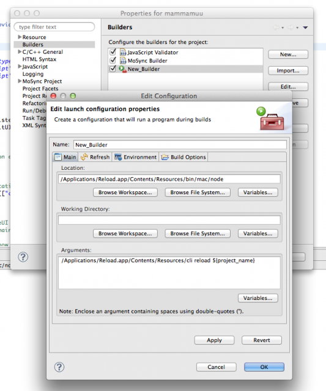

By Igor Eklund
I'm thrilled to announce that it's now possible to invoke Reload functionality from command line! One implication of this is that automation of some repetitive tasks associated with Reload becomes an option. Below I'm going to show how to create and reload a project from command line and a couple examples of how this feature could be used to automate reloading of a project from a your favourite code editor.
First you have to launch Reload application and connect at least one device to the Reload. When you've done that, point your command line terminal to the Reload installation directory where the Reload command line script is located. On OS X it's typically /Applications/Reload.app/Contents/Resources/ and on windows it's in MoSync_Reload_Windows\server\ From there run following commands.
Confirm that you have client's connected:
$ ./cli clientsOutput should then look something like this:
Name Address Platform Version
--------------------------------------------------
maguro 192.168.0.132 Android 4.1.1Create a new project:
$ ./cli create My_Awesome_ProjectReload the project you just created:
$ ./cli reload My_Awesome_ProjectYou can replace My_Awesome_Project with your own awesome name. By default the project will be created in your current Reload workspace directory. If your would like to change workspace to something else, following command can be used:
$ ./cli workspace -p /path/to/your/workspaceTo see what projects are in current workspce run:
$ ./cli projectsFor all other available options:
$ ./cli [command] --helpOn a windows machine you can run command line tool by pointing your terminal to MoSync_Reload_Windows\server\ catalogue and run
> bin\win\node.exe cli --helpThat is, you have to prepend the script name with a reference to a working nodejs instance. In this example an instance bundled with MoSync Reload is used.
Now that we have some basics down let's put it to some use!
Following will make MoSync IDE call a reload command each time specified project is built.
Properties > Builders > Newcli file and a command you would like to run.My setup on OS X looks like this: 
You can invoke reload directly form Vim by typing
:!./path/to/cliWhere path/to should be path to where the cli script is located.
Or you can reload a specific project each time a file buffer is saved:
:autocmd BufWritePost * !./path/to/cli reload MyProjectI hope you found this guide useful. And if you have any suggestions for improvements feel free to leave a comment!